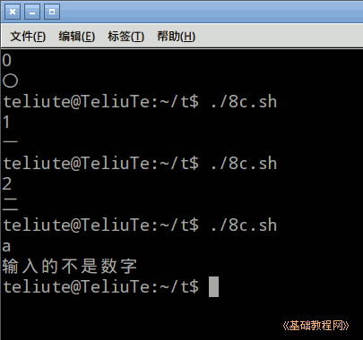

Bash Shell 脚本编程基础
作者：TeliuTe 来源：基础教程网
八、case 多分支语句 返回目录 下一课case 语句用来在多个入口中，选择其中之一；
1、case 多分支语句
1）启动文本编辑器gedit，输入第一行 #!/bin/bash ，保存文件为 8c.sh，并设置可执行权限；
2）语句格式为case $变量 in; 值 ) 命令组;; esac ，输入下面的语句；
保存运行，输入一个数，按回车后得到对应的汉字；

3）最后的* ) 表示不满足上面的条件，就进入这一行命令操作，结束的 esac 别忘了；
4）需要注意，每一个选择项都以双分号结尾，测试条件和命令之间有一个右圆括号；
5）read 是从输入设备读取内容，按回车键结束；
6）下载本课范例；
本节学习了case 语句的基础知识，如果你成功地完成了练习，请继续学习下一课内容；
本教程由TeliuTe制作|著作权所有
基础教程网：http://teliute.org/
美丽的校园……
转载和引用本站内容，请保留作者和本站链接。